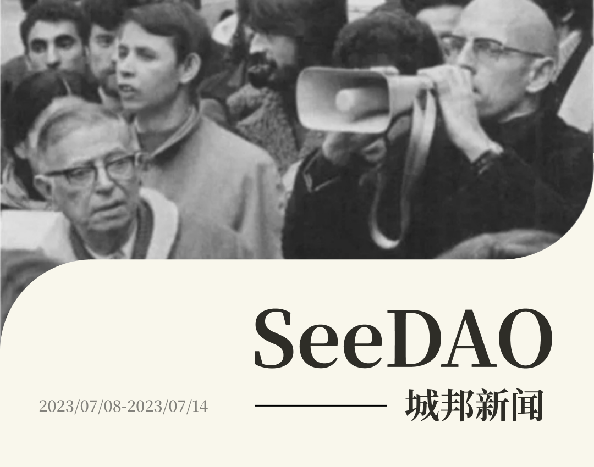
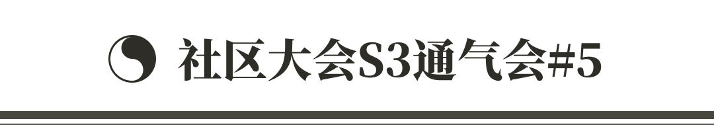
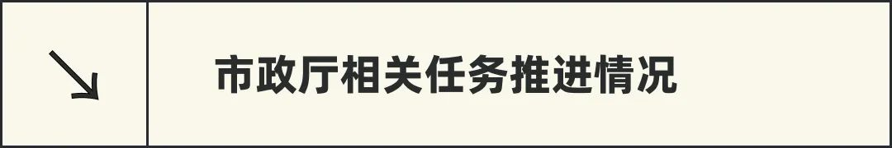
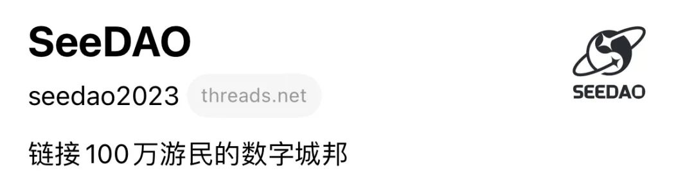
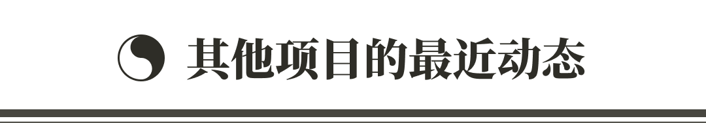
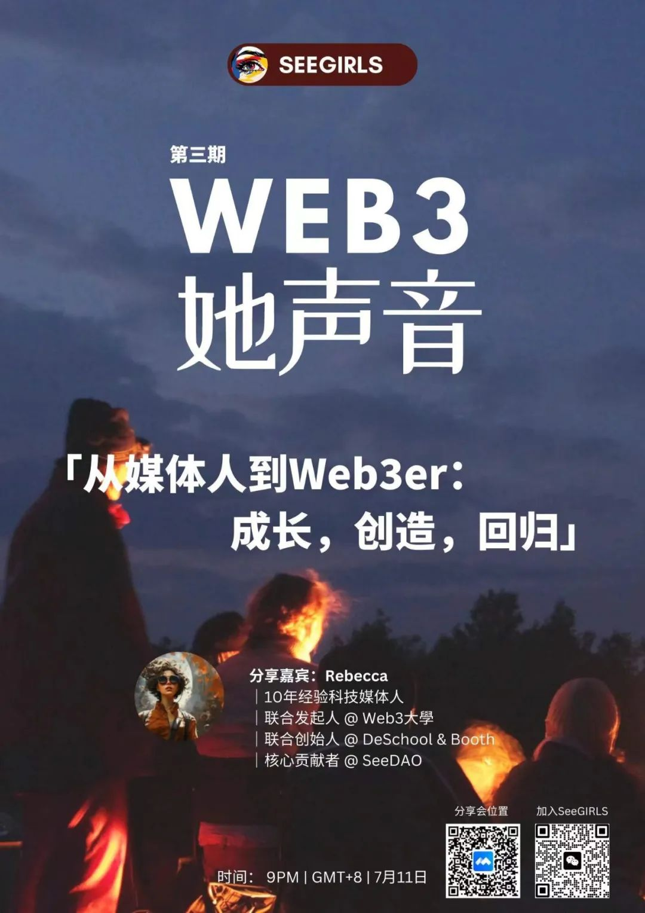

SeeDAO的各位小伙伴们，大家好！今天城邦新闻的主要内容有：
🎓 新手营 3 期结营典礼和 Demoday 2 ｜白菜、疯魔、康师傅 三个战队
🚗 新手营 4 期即将开营，还没上车的小伙伴抓紧时间
📝 歪脖三观第 6 篇原创文章《穿越协议之夏：人文视角的加密技术想象（一）》
👸🏻 SeeDAO 播客 第二期 KC：女孩你可以成为任何人，在了解风险的前提下
👸🏻 SeeGIRLS｜Web3 她声音：Rebecca专访「从媒体人到web3er：成长，创造，回归」
💻 DeSchool 课程上新，AGI 小白课程 S2 更新 6 节课
🆔 SeeDAO 官方号 Threads 欢迎大家关注
🎵 翻译公会即将重启 Water&Music 项目，欢迎大家参与来玩耍
🧭 SBT 发放指南（第二版）来啦

✦ 新手营
/ 三期营：完成 Demoday 2 和结营仪式，启动反馈收集和复盘迭代和积分结算｜Demoday
https://seedao.notion.site/ffcf5afdce7d44f19387fc4d1648cbb2
https://deschool.app/zh/series/64aac2af6e71ef0cab8ce47d/learning?courseId=64aac3646e71ef0cab8ce481§ionId=64aac3646e71ef0cab8ce482
/ 四期营：武侠风IP包装完成，workshop单独立项和DAO Leader培训辅导整合
✦ Web3 小白班｜共学任务打磨更新完成
✦ DAO项目Leader培训和辅导
/ 辅导 SeeGIRLS打磨发起提案 SeeGIRLS女性组织项目P2提案
/ 跟进 LeDAO 周会和提案发起
/ 后续起草教练服务申请流程
/ 基于辅导情况，准备培训材料
✦ 已搜集到的需求完成同步
✦ 第一期 APP 测试计划
✦ 团队基本组建完成，预计本周项目组成员到位后，开展闭门讨论。


✦ 项目和负责人
/ 协调发放小额委员会 SBT，推进小额委员会链上治理
/ 推进对接 OS 需求梳理，本周计划和 Frozen 、Fivea 对接工作流程与功能模块。
✦ 治理工程师
/ 完成事项：
1) 三层治理文章1.0（已发媒体中心）
2) 伙伴招募计划1.0（已发媒体中心）：治理工程师伙伴计划
/ 正在推进：
1) P2提案: 上海线下 DAO 沙龙（组织投票）
2) 新手村和长程班的评估反馈完成，更新到metaforo上
3) 公共项目立项后的安排，以及伙伴招募面试中
✦ SuperMod
/ 对接 Fivea 完成 OS 需求梳理与反馈
/ Mod 小队综合评价工作，第四期新手营运营培育计划
✦ 财务官
/ 整理前两季所有收支，并把所有收支情况明细汇总到各季度收支详情 ，并公开至市政厅看板（感谢 CnD 帮助整理数据👍）
/ 与 Fivea 沟通财务相关模块的 OS 需求
/ 组织积分登记培训，分发积分登记表及积分登记规则，并告知各条线财务小伙伴，开始6月积分登记（积分登记表）
✦ 对接Fivea 品牌小组OS 需求梳理与反馈 以及第二阶段 OS 品牌条线梳理
✦ 数字游民稿件分享会系列活动筹办

✦ 已经完成重点项目包括：
/ AMA 活动：SeeDAO x Trekki NFT x Solana mcm
/ 新加坡线下 AI 主题活动合作拓展
/ 与 lensCN 联合举办 LensFans 黑客松
/ 外联 OS 需求对接
✦ 推进中以及筹备中的项目包括：
/ AMA 活动：SeeDAO x BlockPi x Openblock x RSS3 (7月11日)
/ SeeDAO x DF Archon（黑暗森林全链上游戏，宣传、测试）
/ SeeDAO x node lab(ai+web3科普活动)
/ AMA活动：SeeDAO x AAAny
/ 外联合作商谈与推进（sharevers/Midaswap）
/ Crypto nomadic wellness hacker house by DeepDAO（深圳线下活动，有限人员参与）
/ 线下空间拓展支持：RW / 天星村

✦ SBT 发放指南（notion）：SeeDAO SBT申请发放指南（第二版）
✦ 新手营 DC 频道设置
✦ 和Fivea 沟通 OS 需求收集
✦ 发放第三季小额委员会 SBT
✦ 治理公会运作 notion 支持
✦ SeeGIRLS DC 频道开通 & 身份权限绑定 NFT

✦ 本周还有新出炉的文章正在等待翻译，抢单正在进行时，译者们速来！
✦ 大家在听取 SBT 徽章设计师介绍了创意理念和设计灵感之后，大家在周会和群内都进行了投票。
✦ Forever 介绍了 Dwebot DAO 微信机器人项目，大家对文章及时同步、活跃度统计、定时提醒功能｜Hal 建议类似游戏化的方式做信息通知等功能得到较多共识。
✦ Henry 就 W&M 项目进行了详细介绍，并组建了十多人的项目群，同步也会开通 Notion 页面，也对文章产出（积分奖励）等细节进行了商讨，后续还会评估是否以提案的形式来推进。
✦ 重磅来袭：Henry 也将继续担任公会的主编，并将借鉴市政厅的模式，招募主编小组成员，进一步培养人才并为公会的任务和项目推进节奏与效率进行优化迭代。再次仅以代表翻译公会感谢主编 Henry 曾经的付出，也期待未来再创佳绩。

✦ 本周共学：Tim 带来的 Flock 介绍
✦ 大家对联邦学习与区块链、zkML 等有兴趣的话可以微信或DC找 @timtimtim.eth 交流

摘要：
在参与 Summer of Protocols（协议之夏）项目时，作者有暂时离地、飞越整个 Crypto 地形的感觉。“离地飞行”有好有坏，而在对行业的不同景深切换中，那些始终可见的东西，很可能正是决定这个行业的“震中”最终能将震动传达多远的核心。它的清晰与模糊代表着一种超越路线图的方向性。但同时，这种方向性不可能被设计，而根源于一种集体想象。在系列的“飞越”历程中，作者将作为其中一名研究员，以及背靠华语区的一个“手摇摄影机”，把这种集体想象以相当个人的偏颇视角记录下来。

设计排版 | T1NG
审核 | Ines